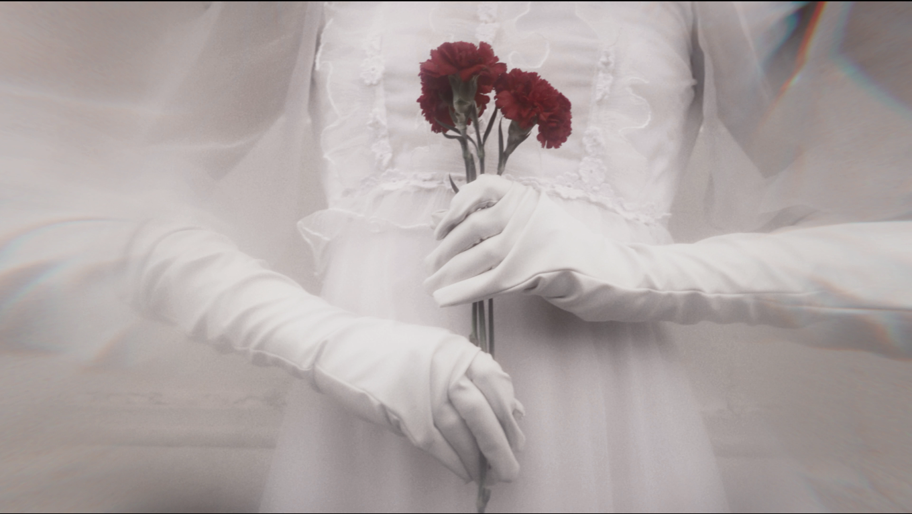

Malena Stefano é graduada em Comunicação Social, com habilitação em Audiovisual pela Universidade de Brasília. Fluente em inglês, nível intermediário em espanhol. Malena já atuou como roteirista para a televisão e para conteúdos de ficção, incluindo o público infantil. É cantora e compositora, criando trilhas sonoras originais para filmes do cinema independente brasileiro. Em 2022, lançou seu primeiro álbum, "Impossível" pelo selo MEIA-VIDA, além de já ter colaborado em faixas de diversos outros artistas. Continua atuando na indústria criativa, com planos para lançamento de seu livro de poesias e livro infantil em 2023, além de estar se aventurando em uma nova carreira no mundo da programação.
Meus hobbies são ler, cantar, dançar e passear no parque.